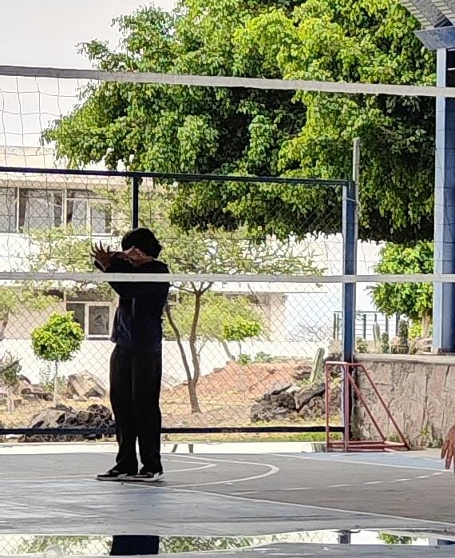
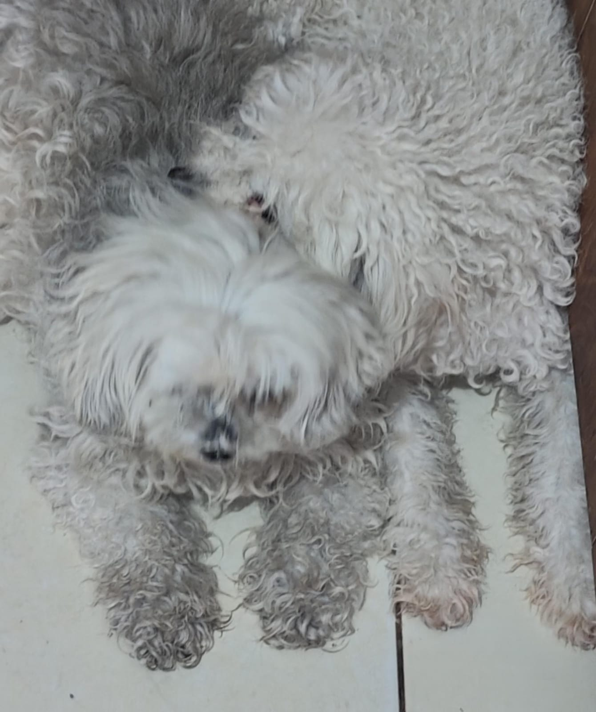
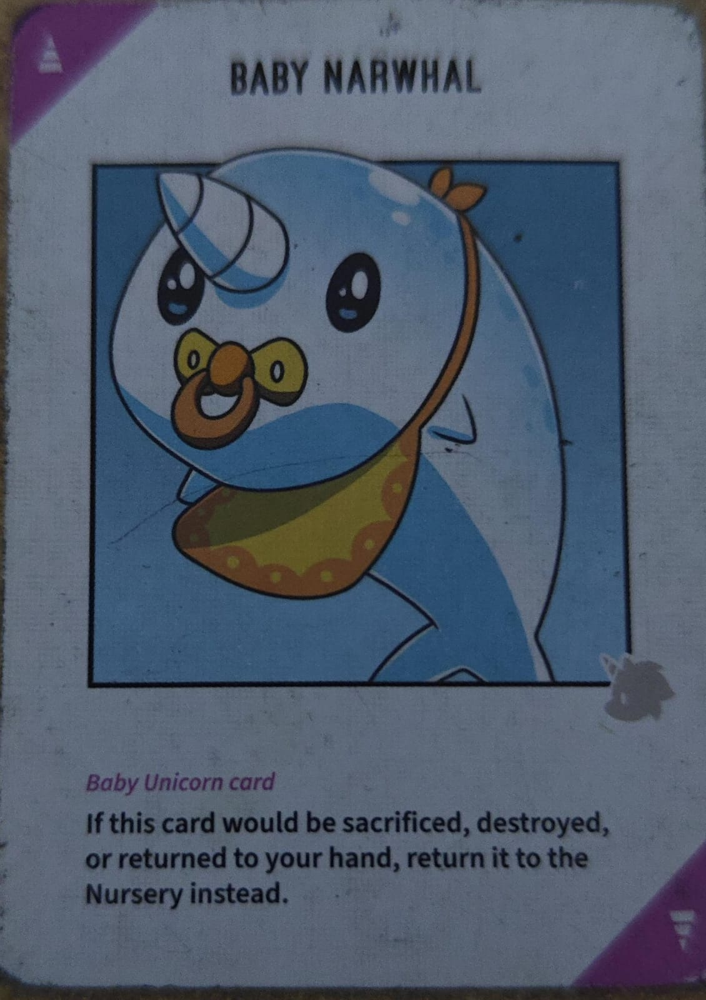
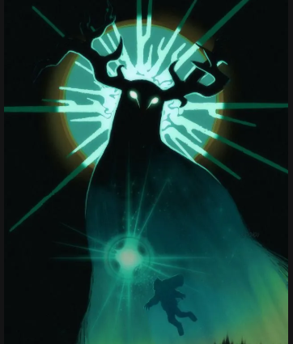

Actividad 02 · Los 7 hábitos de la gente altamente efectiva
¿Qué hábitos me hacen efectivo?
Stephen R. Covey propone siete hábitos que van de adentro hacia afuera: primero ganarte a ti mismo, después trabajar bien con los demás y al final mantenerte afilado.
Los siete, uno por uno
Toca cada tarjeta para ver de qué se trata el hábito.
Victoria privada: de la dependencia a la independencia
Victoria pública: de la independencia a la interdependencia
Renovación
Qué entendí
El hábito que más me pegó es empezar con un fin en mente. Siempre es importante tener un objetivo, porque si no terminas perdiéndote. Aunque a veces ese objetivo no se alcanza, tenerlo claro cambia cómo decides en el camino: sabes qué decir que sí y qué decir que no.
El que más me cuesta es ser proactivo. A veces es difícil tomar la iniciativa y es más cómodo esperar a que las cosas pasen. Covey dice que la proactividad es el primer hábito porque todo lo demás depende de él, y por eso es el que más quiero practicar.
Dinámica: une cada frase con su hábito
0 de 7 colocadas
Autor: quién hizo esta página
Soy Juan Diego Olvera Medina, estudiante de 9.º semestre de LATI. Fuera del salón me encuentras en una cancha de volleyball, explorando el sistema solar de Outer Wilds o en una mesa de juegos con amigos.




- Covey, S. R. Los 7 hábitos de la gente altamente efectiva. Paidós.
- Fotos del autor: propias.